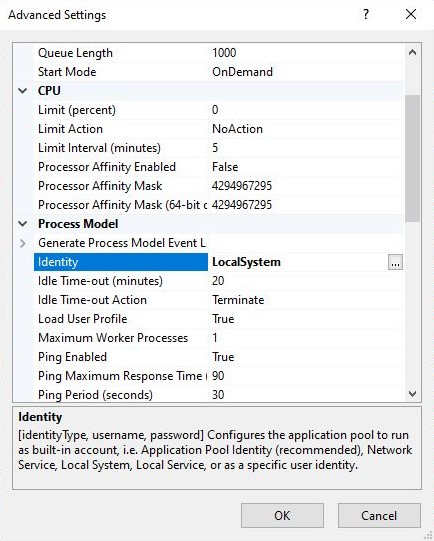

Reporting Service
The reporting service accesses the reports by directly calling SQL Server Reporting Service's API. Once it has received the report back from the API it either prints or exports the report depending on the call.
Prerequisites
Configuration
Settings for the Reporting Service element of the UtilityAPI are configured in the SystemSettings table. You can find the insert script for the settings in the GraniteDatabase install folder:
"...\GraniteDatabase\Data\SystemSettings\SystemSettingsUtilityAPI.sql"
You should have the following settings after running the script:
| Application | Key | Value | Description | ValueDataType | isEncrypted | isActive |
|---|---|---|---|---|---|---|
| Granite.Utility | SSRSWebServiceUrl | Url of the reporting service | string | False | True |
The SSRS Web Service Url should look something like this: http://10.0.0.1/ReportServer
You can find it on the Report Server Configuration Manager under the web service url tab. Check the configuration page (/config) and ensure that Report Service URL Valid and Report Execution Service URL Valid are both true.
IIS Application Pool
In order for the UtilityAPI to access SSRS, the Identity of the Application pool needs to be changed to LocalSystem.
To do this, go to the advanced settings of the application pool associated with the UtilityAPI and change from ApplicationPoolIdentity to LocalSystem as you can see below.

Report Properties
Report Properties on the UtilityAPI homepage allows you to see all of the report paths and parameters.
If the parameter Name is ERROR you will need to check that the report is working in SSRS. The most common errors are a missing stored procedure or the report being pointed to a data source that does not exist.
Printer Statuses
Printer Statuses on the UtilityAPI homepage allows you to see all of the Printers visible to the UtilityAPI and their statuses. The report service does not check the status of the printer before sending a print job. The status is purely useful to diagnose issues printing.
ReportFileExport
This process calls SSRS and saves the report to the specified file path. The file path has to be on the server where the UtilityAPI is running. To get the file from the server, the easiest option is to send it as an email attachment.
Supported file types are PDF and EXCEL, both the new .xlsx and the old .xls. If you are unsure which to use, go for .xlsx
See the API Documentation for more details on how to export a report using the API. See the SQLCLR documentation for how to export a report using SQLCLR.
ReportPrint
This process calls SSRS and sends the report to a print queue. Check Printer Statues on the UtilityAPI homepage to see the list of available printers.
See the API Documentation for more details on how to print a report using the API. See the SQLCLR documentation for how to print a report using SQLCLR.